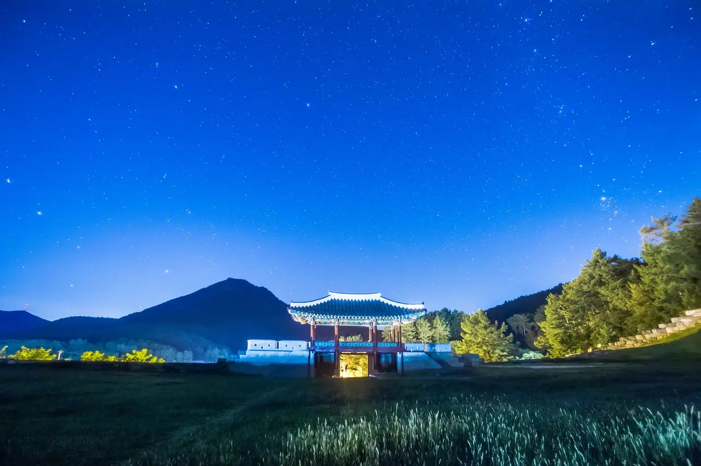
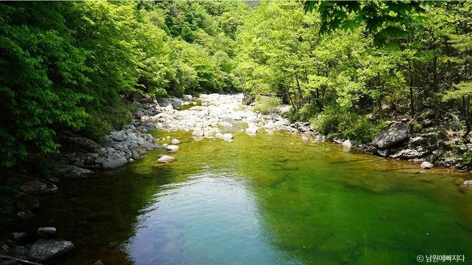
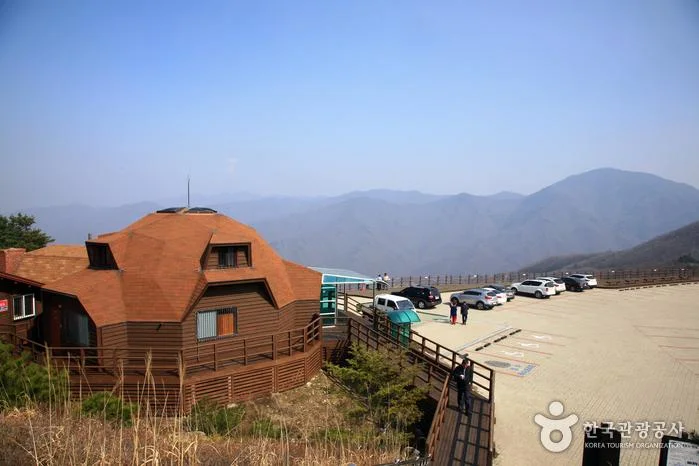

▲ 산간 국도. 야간에는 도로 양옆 숲에서 동물이 갑자기 진입한다 ⓒ 한국관광공사 (공공누리 제1유형)
여행에서 밤 국도를 타게 되는 순간이 있습니다. 일몰을 보고 나오거나, 계곡에서 늦게 출발하거나, 정체를 피해 국도로 빠지는 경우입니다.
이때 가장 자주 만나는 위험은 다른 차가 아닙니다.
1. 5년 만에 6배
| 항목 | 수치 |
|---|---|
| 2020년 | 15,107건 |
| 2021년 | 37,261건 |
| 2022년 | 63,989건 |
| 2023년 | 79,278건 |
| 2024년 | 91,162건 — 2020년 대비 약 6배 |
종류별로는 고양이가 가장 많습니다. 2023년 기준 38,143건(48.1%)으로 절반에 가깝고, 고라니가 18,267건(23.0%)으로 뒤를 잇습니다.
다만 두 종의 성격이 다릅니다. 고양이는 건수가 많지만 차량 피해는 작습니다. 반면 고라니는 체구가 커서 충돌 시 차량 파손과 2차 사고로 이어질 수 있습니다.
정부는 2025~2027년 3차 저감대책으로 로드킬 상위 100개 구간을 집중 관리하고 있습니다. 유도울타리 59개 구간, LED 주의표지판 51개 구간, 구간단속카메라 13개 구간 등이 포함됩니다. 양평·횡성·남원 3개 구간에는 실시간으로 야생동물 정보를 알려주는 AI 안내 시스템이 들어갑니다. 앞서 상위 50개 구간에서는 대책 시행 후 연평균 71%의 사고 감소가 확인됐습니다.
📍 고라니가 도로로 뛰어드는 이유
고라니는 야행성이고, 헤드라이트 앞에서 멈추는 습성이 있습니다. 강한 빛을 받으면 순간적으로 시야를 잃고 움직이지 못합니다.
운전자는 동물이 피할 것이라고 기대하지만, 실제로는 그 자리에 서 있거나 예측과 반대 방향으로 뜁니다. 그래서 '알아서 비키겠지'라는 판단이 가장 위험합니다.

▲ 국도변은 가로등이 없어 별이 보일 만큼 어둡다. 이 조건에서 인지 거리는 헤드라이트가 닿는 곳까지다 ⓒ 경상남도 고성군 (공공누리 제1유형)
2. 핸들을 꺾으면 더 커집니다
가장 중요한 원칙입니다. 동물이 나타났을 때 급하게 핸들을 꺾는 것이 사고를 키웁니다.
| 순위 | 행동 |
|---|---|
| 1 | 제동 — 차로를 유지한 채 감속 |
| 2 | 경적 — 동물을 움직이게 함 |
| 3 | 피할 수 없으면 직진 상태로 충돌 |
| 금지 | 급조향 — 중앙선 침범·전복 위험 |
국도는 대개 편도 1~2차로에 중앙분리대가 없습니다. 핸들을 꺾으면 마주 오는 차선이나 비탈로 들어갑니다. 동물과의 충돌보다 이쪽이 훨씬 위험합니다.

▲ 능선을 따라가는 도로는 갓길이 거의 없다. 핸들을 꺾어도 피할 공간 자체가 없는 구조다 ⓒ 한국관광공사 (공공누리 제1유형)

▲ 고지대는 안개가 잦다. 안개 낀 밤에는 상향등이 오히려 난반사로 시야를 더 가린다 ⓒ 한국관광공사 (공공누리 제1유형)
3. 신고처가 도로마다 다릅니다
| 도로 | 연락처 |
|---|---|
| 일반도로 | 지역번호 + 120 |
| 국도 | 관할 국토관리청 또는 국도관리사무소 |
| 고속도로 | 한국도로공사 1588-2504 |
사체를 그대로 두면 2차 사고로 이어집니다. 뒤차가 급제동하거나 피하려다 사고가 나는 경우가 실제로 발생합니다. 직접 치우려 하지 말고 신고가 원칙입니다.
4. 세워야 한다면 표지부터
충돌 후 차량 상태를 확인하려 정차할 때가 가장 위험한 순간입니다.
| 순서 | 행동 |
|---|---|
| 1 | 비상등 점등 · 갓길로 최대한 이동 |
| 2 | 후방 운전자가 확인할 수 있는 위치에 고장 표지 설치 |
| 2-1 | 밤에는 사방 500m에서 식별 가능한 적색 섬광신호·전기제등·불꽃신호 추가 |
| 3 | 탑승자는 가드레일 밖으로 대피 |
| 4 | 신고 후 차 안에서 대기하지 않음 |
📍 "후방 100m"는 옛 규정입니다
예전 도로교통법 시행규칙은 삼각대를 주간 100m, 야간 200m 지점에 두도록 했습니다. 지금은 이 거리 규정이 없습니다.
현행 기준은 후방에서 접근하는 자동차 운전자가 확인할 수 있는 위치입니다. 다만 밤에 고속도로등에서 운행할 수 없게 된 경우에는, 사방 500m에서 식별할 수 있는 적색 섬광신호·전기제등 또는 불꽃신호를 함께 설치해야 합니다.
거리 규정이 사라진 이유는 표지를 놓으러 걸어가는 것 자체가 위험했기 때문입니다. 어두운 옷을 입고 뒤로 100m를 걸으면 뒤차에는 거의 보이지 않습니다. 안전조끼를 트렁크가 아니라 실내에 두면 차 뒤로 도는 동선을 줄일 수 있습니다.

▲ 국도는 마을을 그대로 통과한다. 갓길이 곧 생활 공간인 구간이 많다 ⓒ 한국관광공사 (공공누리 제1유형)
▲ 횡성. 호숫가 마을을 지나는 도로처럼 일반도로에서 발견하면 지역번호와 120으로 신고한다 ⓒ 횡성군
5. 보험 처리는 자차 담보
야생동물과 충돌한 차량 피해는 자기차량손해(자차) 담보로 보상받을 수 있습니다.
다만 사고 사실을 입증할 자료가 필요합니다. 블랙박스 영상, 현장 사진, 신고 접수 기록을 남겨두는 것이 좋습니다.

▲ 남원 뱀사골. 계곡에서 늦게 나오면 곧바로 야간 산길 주행이 된다. 출발 시각을 앞당기는 것이 가장 확실한 예방이다 ⓒ 남원시(남원에빠지다)

▲ 남원 정령치. 고개 정상부는 도로와 서식지가 그대로 맞붙어 있다 ⓒ 한국관광공사 (공공누리 제1유형)
6. 애초에 마주치지 않는 방법
| 항목 | 내용 |
|---|---|
| 속도 | 야간 산간 국도는 제한속도보다 낮게 |
| 상향등 | 대향차 없을 때 적극 사용 — 인지 거리 확보 |
| 표지판 | 야생동물 주의 구간은 실제 다발 지점 |
| AI 안내 | 양평·횡성·남원 구간은 실시간 정보 제공 |
| 시간대 | 해질녘·새벽에 집중 — 가능하면 회피 |
| 한 마리 뒤 | 고라니는 무리로 움직임 — 뒤따라 나옴 |
| 졸음 | 국도를 계속 타지 말고 휴게소·마을에서 끊기 |

▲ 고갯길은 커브마다 전방이 끊긴다. 동물이 보이는 시점에는 이미 제동 거리가 모자란 경우가 많다 ⓒ 한국관광공사 (공공누리 제1유형)
▲ 양평. 사고는 해질녘과 새벽에 몰린다. 이 시간대를 피하는 것만으로도 확률이 크게 낮아진다 ⓒ 한국관광공사 (공공누리 제1유형)
7. 정리
동물 찻길사고는 2020년 15,107건에서 2024년 91,162건으로 5년 만에 약 6배 늘었습니다. 2023년 기준 종류별로는 고양이가 38,143건(48.1%), 고라니가 18,267건(23.0%)입니다. 건수는 고양이가 많지만 차량 피해가 큰 쪽은 고라니로, 헤드라이트 앞에서 멈추는 습성 때문에 '알아서 피하겠지'라는 판단이 통하지 않습니다.
대응 원칙은 급조향 금지입니다. 중앙분리대가 없는 국도에서 핸들을 꺾으면 대향 차선이나 비탈로 들어갑니다. 제동 → 경적 → 직진 상태 충돌 순서가 피해를 가장 작게 만듭니다.
신고처는 도로마다 다릅니다. 일반도로는 지역번호+120, 국도는 국토관리청·국도관리사무소, 고속도로는 1588-2504입니다. 고장 표지는 후방 운전자가 확인할 수 있는 위치에 두면 되고(옛 100m·200m 거리 규정은 폐지), 밤에는 사방 500m에서 식별 가능한 적색 섬광신호나 불꽃신호를 함께 설치해야 합니다. 탑승자는 가드레일 밖으로 대피하며, 차량 피해는 자기차량손해 담보로 보상받을 수 있습니다.